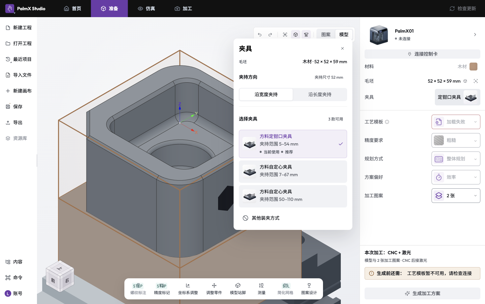

2026.03 – 2026.11 · 产品经理
易如万物 · PalmX
PalmX 是一个面向海外创客与小型工作室的创业项目，研发消费级桌面 CNC 金属加工设备及配套软件，旨在通过 AI 辅助规划与多端协同，降低从设计到加工的使用门槛。
我负责用户研究、需求规划与产品信息架构，主导 PC、机台屏幕与 App 的体验设计。围绕用户的加工目标设计 AI 辅助任务流程，并协同软硬件研发推进原型验证与三端联调。
PalmX
G1 Hybrid

软硬件协同体验PC · HMI · App